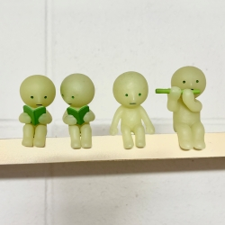
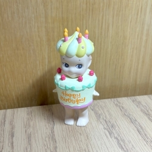
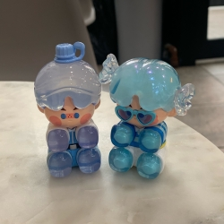

Diving into the Unknown
Mystery Boxes is where curiosity and excitement come together. Whether you’re an avid collector or a first-time adventurer, Mystery Marvels is here to review and explore the different mystery series out there and tell you which are the best and upcoming series you should invest in. We celebrate the thrill of not knowing exactly what’s inside—until you open it and we hope you join us in this excitement.
Our upcoming features include unboxing videos, photo galleries of limited-edition finds, honest reviews and so much more. Browse our growing community of collectors who share tips, trades, and stories about discovering that elusive item they’ve been searching for. Here, the box itself is only the beginning; it’s the excitement and community that truly bring our site to life.
Series of the Month
Smiskis
These strangely cute green human figures push the limits of traditional collectibles. Their simple design and vibrant green color creates a unique glow in the dark effect!
Sonny Angels
Sonny Angels are known for their cute designs—a series of baby figures dressed in a variety of creative costumes that always guarantee a charming appeal.
Pino Jelly
The "Pino Jelly" series is one of Pop Mart's most endearing lines, boasting playful and cutesy aesthetics with vibrant colors that evoke joy and wonder.